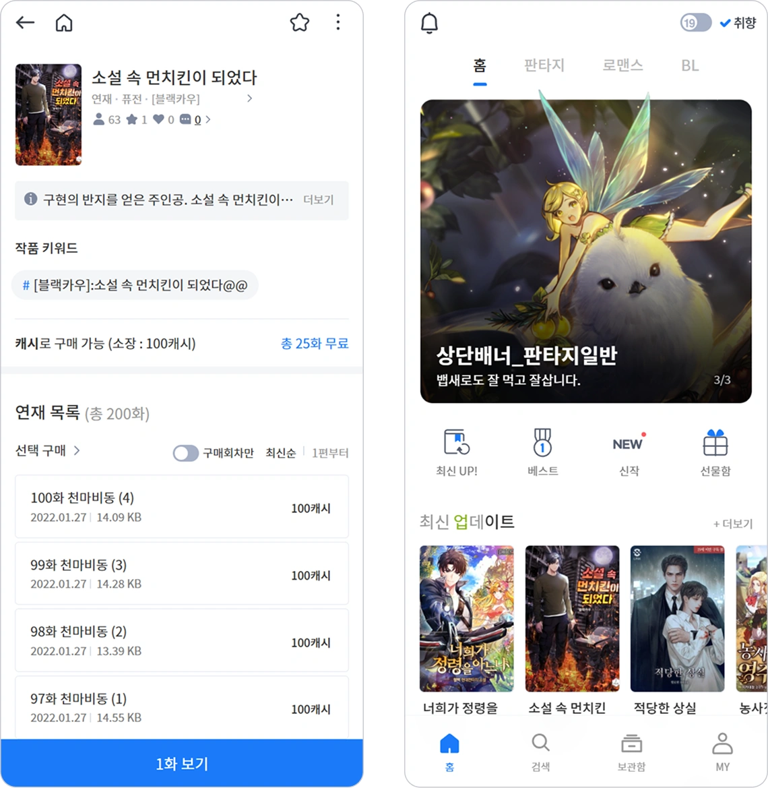

02 / Product · 2022
읽기와 운영을 하나의 흐름으로.
웹소설을 찾고 읽고 결제하는 사용자 경험과, 콘텐츠를 관리하는 운영 CMS를 함께 구현한 대규모 리뉴얼입니다.
- Role
- 프론트엔드 개발자
- Period
- 2022.05 — 2022.09
- Stack
- React · Redux · React Native WebView
- Scope
- 사용자 서비스 · 운영 CMS 핵심 화면
Project Flow
- 01DISCOVER SEARCH
- 02READER FLOW
- 03PAYMENT HISTORY
- 04CMS OPERATE
01 / Challenge
사용자 서비스와 운영 화면의 복잡도가 동시에 커졌습니다.
로그인부터 작품 탐색, 뷰어, 결제까지 이어지는 고객 흐름과 회원·작품·이벤트·통계를 다루는 CMS를 같은 일정 안에서 안정적으로 연결해야 했습니다.
02 / Build
서비스 이용과 운영 관리의 핵심 화면을 끝까지 구현했습니다.
- 로그인·회원가입·작품 탐색·보관함·검색·마이페이지를 구현했습니다.
- 웹소설 뷰어와 결제 페이지를 개발하고 결제 서비스를 연동했습니다.
- 회원·통계·작품·이벤트·결제 내역 CMS의 목록·상세·등록·검색·필터를 구성했습니다.
- React 화면을 React Native WebView 앱에 반영하고 QA 이슈에 대응했습니다.
03 / Decision
상태가 복잡해지는 시점에 Redux로 흐름을 통일했습니다.
규모가 커지며 상태 추적과 아키텍처 통제가 어려워졌습니다. 팀이 이미 익숙한 도구와 남은 일정을 함께 고려해 Redux로 전환했고, 복잡한 데이터 흐름을 한 방식으로 정리했습니다.
04 / Result
짧은 QA 기간에도 핵심 흐름을 안정화하고 마감을 지켰습니다.
Core flow
지정받은 사용자 서비스와 운영 CMS 핵심 화면의 퍼블리싱·기능 구현을 전담했습니다.
2 sides
사용자 서비스와 운영 CMS를 하나의 제품 흐름으로 연결했습니다.

